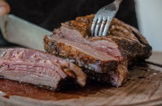

Classic Meatloaf Recipe

Description
Enjoy a comforting Classic Meatloaf made with ground beef, breadcrumbs, and spices.
Perfect for a party or a meeting with your friends.
Ingredients
- 1 lb ground beef
- 1/2 cup breadcrumbs
- 1/4 cup onion
- 1/4 cup green pepper
- 1/4 cup milk
- 1 egg
- Seasonings: salt, pepper, garlic powder, dried thyme
Steps
- Mix all ingredients in a bowl.
- Shape into a loaf and place in a baking dish.
- Bake at 350°F for 1 hour.